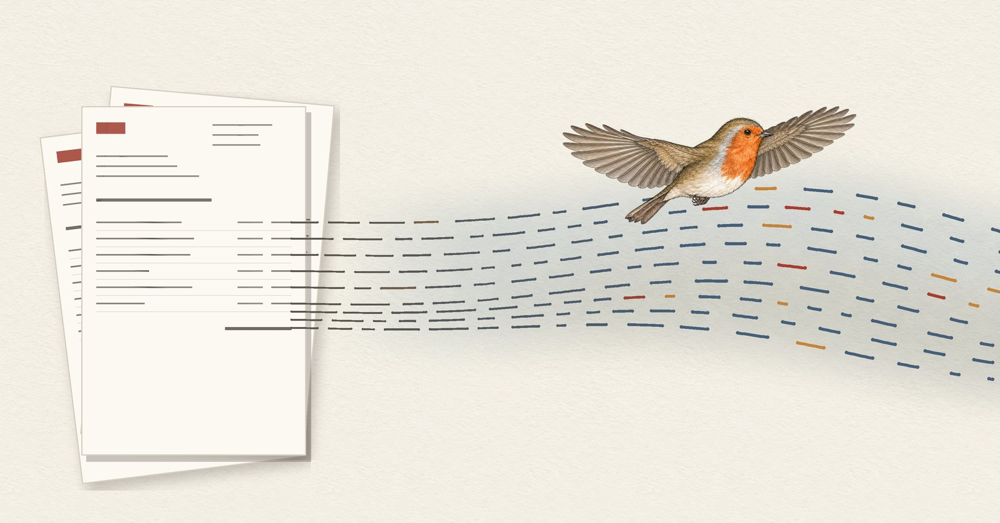

E-invoicing: from invoice image to data record

As a bookkeeper, I have spent long enough translating invoice images into data. With e-invoicing, that is no longer necessary.
You already know the principle from integrated business software (ERP) and digital HR management with an employee portal: master data and transaction data are made available for further processing as they arise, either in real time or at defined intervals. ERP systems have been doing this for invoicing for decades. The invoicing data is available as a record, for example to accounts receivable. In this process, the invoice image has never mattered for the result. It was only needed by the invoice recipient and for the tax audit.
This last reason for the invoice image to exist disappeared with the new version of Section 14(1) of the German VAT Act (UStG) on 1 January 2025 and the amendment of the GoBD, the German principles for electronic bookkeeping (paras. 76, 118 and 119), by the Federal Ministry of Finance's circular of 14 July 2025. With an e-invoice, the structured data record is the invoice; as a rule, it is the only part that has to be retained.
I understand that the remaining transitional rules are taking up a lot of attention right now. The bigger opportunity, however, lies in adapting our own processes now instead of clinging to the bureaucratic monster that is the invoice image. The call for simplification is always loud – until we have to change our habits to get it. Working consistently with data records instead of invoice images really is a great relief.
To share this sense of relief, I would like to show how laborious our habit of translating invoice images into data records is. For example, we copy IBANs from invoices into our banking software when the payee is not yet available as a data record. With an e-invoice, the IBAN is part of the data record – the payment can be prepared without anyone retyping it.
In my next piece in the series Surfing the data flow of value creation, I will look at further examples of how seamless data flow, straight-through processing and interface integration avoid entering the same data twice.